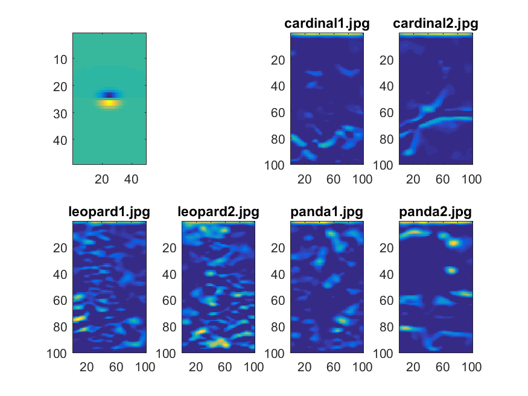

CS1674: Homework 2
Due: 2/11/2020, 11:59pm
This assignment is worth 50 points.
All the necessary files (code, images, etc.) mentioned throughout this assignment can be found on Canvas HW Submission Page (hw2_starter.zip).
Part I: Image Responses with Filters (10 points)
In this problem, you will measure the responses of images to different filters. For each image, you will compute the response of each image pixel to the filters from a "filter bank" as discussed in class. In a later assignment, you will use these responses to filters to compute image representations.
- Download these images:
cardinal1,
cardinal2,
leopard1,
leopard2,
panda1,
panda2.
- Download the script makeLMfilters (originally appearing in the Leung-Malik filter bank), and run it (F = makeLMfilters;) to get a set of filters. Each filter F(:, :, k) is of size 49x49, and there are 48 filters.
- [4 pts] In a script filter_responses.m, use a cell array to store the list of filenames so you can loop over them (e.g. filenames{i}). Read in all images, convert them to grayscale, and resize them to the same square size (e.g. 100x100), so that the visual map of responses (filtering outputs) can be more comparable across images. Compute the cross-correlation of each image with each of the 48 filters using imfilter.
- [4 pts] For each filter, generate a 2x4 subplot showing the following subplot rows: (1) the filter and a blank subplot, (2) the responses to the cardinal images, (3) the responses to the leopard images, and (4) the responses to the panda images. Refer to the course Matlab tutorial, as well as this link, for how to use the subplot function.
- [2 pts] Choose and include in your submission (1) one filter where the responses for the same animal category are similar, while the responses for different animal categories are quite distinct; and (2) one filter where responses of different animals look fairly similar. Eyeballing is good enough; we won't be picky when we grade. See an example for one filter below. Name the files same_animal_similar.png and different_animals_similar.png.
Tips:
- You can use saveas(gcf, strcat('responses_to_filter_', num2str(i), '.png')); to save your subplots, so you can later browse through them and pick interesting examples.
- You can also save images directly without displaying them, by turning the visibility off using set(0, 'DefaultFigureVisible', 'off'); near the beginning of your script. Make sure to turn it back on after this assignment!

Part II: Hybrid Images (10 points)
In this problem, you will create a hybrid image (which looks like one thing zoomed in and another zoomed out) like the one shown in class.
- Download one pair of images:
- [3 pts] In a script hybrid_image.m, read in the first image in the pair as im1 and the second as im2. Convert both images to grayscale, and resize them to the same square size (e.g. 512x512).
- [2 pts] Apply a Gaussian filter to both, using e.g.
imgaussfilt(im1, 10, 'FilterSize', 31). Save the results as im1_blur, im2_blur.
- [2 pts] Obtain the detail image, by subtracting im2_blur from im2, and save the result as im2_detail.
- [3 pts] Now add im1_blur and im2_detail, show the image, save it as 'hybrid.png', and include it with your submission. Play with scaling it up and down (by dragging the corner of the Matlab figure) to see the "hybrid" effect.
Part III: Content-Aware Image Resizing (30 points)
You will implement one part of the content-aware image resizing technique
described in Shai Avidan and Ariel Shamir's influential SIGGRAPH 2007 paper, "Seam Carving for Content-Aware Image Resizing", cited 2027 times and available here. First read through the paper, with emphasis on Section 1 and Section 3.
Most functions are provided for you on Canvas (read their descriptions in "Provided functions" below before you begin, and look through the provided code), and some you will have to write. The goal is to get more practice with Matlab, examine the performance of the method on different kinds of input images, and produce visually interesting results.
See a brief explanation of the algorithm here (play slides with narrations or read notes at the bottom; note that the most challenging parts are implemented for you but you have to know how to use them). See some examples of the outputs and interesting results from previous CS1674 courses, here.
Provided functions:
- M = cumulative_minimum_energy_map(energyImage,seamDirection) - computes minimum cumulative energy. The input energyImage is a 2D matrix output by the energy_image function that you will implement (see below), and the input seamDirection is 'HORIZONTAL' or 'VERTICAL'. The output is a 2D matrix of class double.
- verticalSeam = find_optimal_vertical_seam(M) and horizontalSeam = find_optimal_horizontal_seam(M) - compute the optimal
vertical and horizontal seams. The input is the 2D matrix output by the function above, and the output is a
vector containing the row indices (or column indices, respectively) of the
pixels belonging to a horizontal (or vertical, respectively) seam. For a horizontal seam, you have as many seam points as you have image columns, i.e. one row index for each image column.
- [reducedColorImage] = reduceHeight(im, display_flag) - reduces the height of your image in a content-aware away (see description of reduceWidth above)
Here is the code you need to develop:
- [5 points] Function [energyImage, Ix, Iy] = energy_image(im)
- to compute the energy at each pixel using the magnitude of the
x and y gradients.
Inputs:
- im should be a nrows-x-ncols-x-3 matrix of class (datatype) uint8, e.g. the output of imread on a color image. However, you need to convert it to grayscale before computing the gradients, using rgb2gray.
Outputs:
- Each of the outputs energyImage, Ix, Iy should be 2D matrices of class double, each of size nrows-x-ncols-x-1.
- Ix, Iy are the gradients in the x and y directions, i.e. the dI/dx and dI/dy; use two of the filters we discussed in class to compute them. Don't use Matlab's imgradient function but you are welcome to use imfilter.
- energyImage is computed similar to equation 1 in the paper, but using L2 norm: sqrt((dI/dx)^2+(dI/dy)^2).
- [5 points] Function displaySeam(im, seam, seamDirection) - to display the selected type of seam on top of the input image.
Inputs:
- The input
im should be the result of an imread.
- seamDirection should be the string 'HORIZONTAL' or 'VERTICAL'.
- seam should be
the output of find_optimal_vertical_seam or find_optimal_horizontal_seam (which are provided for you).
Tips:
- To plot points on top of a displayed image in an existing figure, first use hold on;
followed by plot(...).
- The key challenge here will be figuring out in what order to give the arguments to the plot function calls. The first argument corresponds to the x axis, and the second to the y axis. A seam is a collection of points, and each point should be plotted at a particular point on the x axis and on the y axis. You will need to understand what the pixel stored at a particular index in a seam represents (i.e. where it came from), and it is helpful to think about what the lengths of the seams equal. Also note that when you plot values over an image, rows of the image correspond to the y axis, and columns to the x axis.
- [5 pts] Function [reducedColorImage] = reduceWidth(im, display_flag) - to reduce the width of your image in a content-aware away. The function should call the energy_image, cumulative_minimum_energy_map, and find_optimal_vertical_seam functions.
Inputs:
- The function should take in a nrows-x-ncols-x-3
matrix im of class uint8.
- If the display_flag is set to true, the function should display, in a 1x3 subplot, the following: (a) the energy image, (b) the cumulative energy image, (c) the optimal seam (using displaySeam).
Outputs:
- The output must be a 3D matrix reducedColorImage, of class uint8, which is the same as the input image but with its width reduced by one pixel.
Tips:
- The corresponding function [reducedColorImage] = reduceHeight(im) is provided for you; use it to see one possible way to implement the reduction in width.
- [5 points] Function [] = generate_results(filename, reduceAmt, reduceWhat) - to run the functions you wrote, and the provided functions, on an image, and show the results. In your function, after reading in the image, you should call reduceWidth or reduceHeight as many times as needed to reduce the width/height by the requested amount, but should only set the display flag to true in the first iteration. You should also display, in a 1x3 subplot: (a) the original image, (b) the final content-aware-reduced image, and (c) the content-agnostic reduction using a simple imresize. Label the figure and indicate what was reduced, and by how many pixels. Label the subfigures with titles "original", "content-aware", "standard".
Inputs:
- filename is a character array (e.g. 'pittsburgh.png'),
- reduceAmt is an integer which says by how many pixels to reduce the width/height, and
- reduceWhat is 'WIDTH' or 'HEIGHT'.
Required visual results:
- [5 pts] Include the visual results of running generate_results on the provided prague.jpg and shrinking its height by 100 pixels. Also include the results of shrinking the width of the provided mall.jpg by 100 pixels. For both images, include:
- the original image and the results of standard and content-aware reduction (saved as files prague_height_reduced.png and mall_width_reduced.png),
- the energy and cumulative energy maps for the original image, and the first optimal seam (saved as files prague_energy.png and mall_energy.png).
- [5 pts] Provide one interesting result on a different image of your choice. The goal is
to form some perceptually pleasing outputs where the resizing better preserves content
than a blind resizing would, or an example where the output looks unrealistic
or has artifacts ("failure cases"). Be creative in the images you
choose, and in the amount of combined vertical and horizontal carvings you apply. If you have a large image, try applying imresize first to resize the image to a small size, in order to make the computations faster and allow you to try more ways of transforming the image.
Create a 1x3 subplot and display the following three: (a) the original image, (b) resizing using imresize, and (c) content-aware resizing in your submission. Use a title in your figure to say by how much you reduced the size, and in which direction. Name the file interesting.png and include it in your submission.
Submission: Please submit the following files:
- filter_responses.m
- same_animal_similar.png and different_animals_similar.png
- hybrid_image.m
- hybrid.png
- energy_image.m
- displaySeam.m
- reduceWidth.m
- generate_results.m
- prague_height_reduced.png, mall_width_reduced.png, prague_energy.png, and mall_energy.png
- interesting.png
Acknowledgement: Adriana Kovashka.
Acknowledgement: Part III is partially based on an exercise by Kristen Grauman.
{kind=link}
{kind=link}
{kind=link}
{kind=link}
{kind=link}
{kind=link}
{kind=link}
{kind=link}
{kind=link}
{kind=link}
{kind=link}
{kind=link}